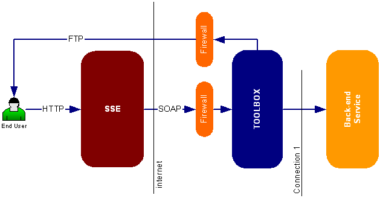
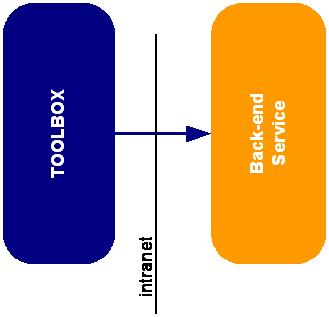
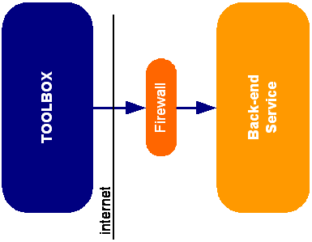
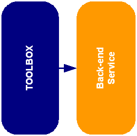
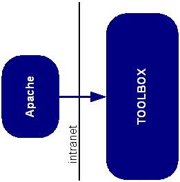

The TOOLBOX can be installed using different configurations. Apache can be used as a proxy server and Tomcat as a servlet engine. Alternatively the TOOLBOX can be installed using only Tomcat. Furthermore Apache and Tomcat can be installed on the same machine or on two different machines.
In the following we report a short description of the hardware configuration needed to install and run correctly the and the integrated service.
In the following we report a short description of the FIREWALL configuration needed to install and run correctly the TOOLBOX and the integrated service. Next figure shows the typical SSE framework.

The SSE server accesses the TOOLBOX via an Internet connection using the SOAP protocol over HTTP. Thus the firewall has to be configured in order to enable the communication between SSE and the TOOLBOX (TOMCAT).
The End User downloads the delivered products via an Internet connection using the FTP protocol. Thus the firewall has to be configured in order to enable the communication between the End User and the TOOLBOX internal FTP server. It is recommended to use the TOOLBOX ftp server on port 21 in order to avoid firewall problems on the client side.
 On Linux you need to start the TOOLBOX as root in order to start the FTP server on port 21. Make sure that the Linux VSFTP server is switched off before configuring the TOOLBOX to start the FTP server on port 21. If the TOOLBOX can not be started as root you can start the TOOLBOX FTP server on 2121 and then you can use a Linux box gateway to redirect the TCP traffic from port 21 to port 2121. Please refer to your network administrator for more information.
On Linux you need to start the TOOLBOX as root in order to start the FTP server on port 21. Make sure that the Linux VSFTP server is switched off before configuring the TOOLBOX to start the FTP server on port 21. If the TOOLBOX can not be started as root you can start the TOOLBOX FTP server on 2121 and then you can use a Linux box gateway to redirect the TCP traffic from port 21 to port 2121. Please refer to your network administrator for more information.
For what concerns the communication between TOMCAT and the “Service Resources” (Connection 1) three possible scenarios are foreseen
-
TOMCAT/TOOLBOX (scripts) and the “Service Resources” use the network to communicate (NFS, HTTP, FTP, JDBC etc) and are installed on two different machines which are part of the same LAN (LINK) or are installed on the same machine.
 -
TOMCAT/TOOLBOX (scripts) and the “Service Resources” use the network to communicate (HTTP, FTP etc) and are connected via an Internet connection (LINK). Thus the firewall has to be configured in order to allow the communication between TOMCAT/TOOLBOX and “Service Resources”.
 -
TOMCAT/TOOLBOX (scripts) and the “Service Resources” do not use the network to communicate (API, SCRIPT, File Exchange etc) and are necessarily installed on the same machines (see LINK).
-

An Apache server can be used as a proxy server to redirect all the incoming requests to the TOOLBOX
Two possible configurations are foreseen:
- Apache and TOMCAT are installed on two different machines which are part of the same LAN or are installed on the same machine.

- Apache and TOMCAT are connected via an Internet connection. Thus the firewall has to be configured in order to allow the communication between Apache and TOMCAT.